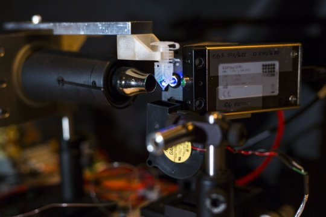

Snapchat picks London for international base in boost for UK tech
Snapchat has set up an international base in London and will book sales from outside of the US in the UK. The move is a significant departure from other internet companies like Google and Facebook, which have registered the majority of their international advertising revenues in Ireland, as well as a boost to the British tech sector after the Brexit vote. Snap, the photo-sharing app's parent company, said "the UK’s strong creative industries make this a great place to build a global business".
DNA duplicator small enough to hold in your hand

This possibility is raised by a fundamentally new method for controlling a powerful but finicky process called the polymerase chain reaction. PCR was developed in 1983 by Kary Mullis, who received the Nobel Prize for his invention. It is generally considered one of the most important advances in the field of molecular biology because it can make billions of identical copies of small segments of DNA so they can be used in molecular and genetic analyses.
Trump: It was probably Russia that hacked the DNC, Clinton campaign

Russia was likely behind the hacks of the Democratic National Committee and Hillary Clinton's presidential campaign, U.S. President-elect Donald Trump has finally acknowledged. In his first news conference in about six months, Trump also said Wednesday that cybersecurity will be a top priority for his administration. He wants proposals on new hacking defenses within 90 days. "We get hacked by everybody," he said.